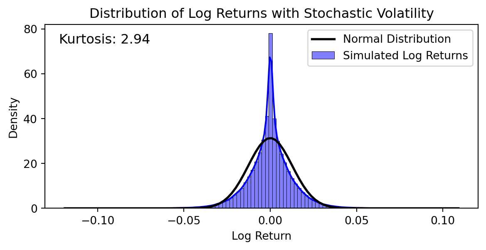
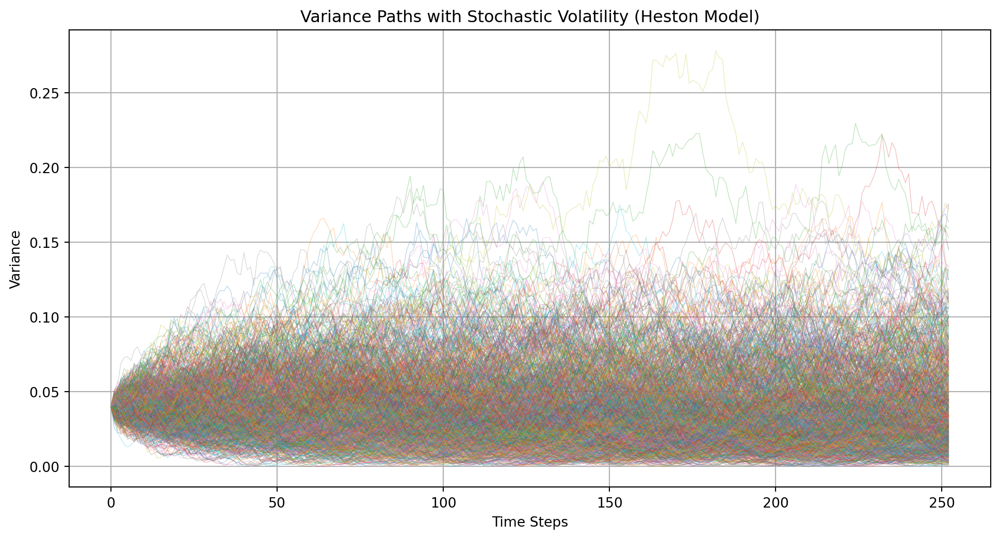
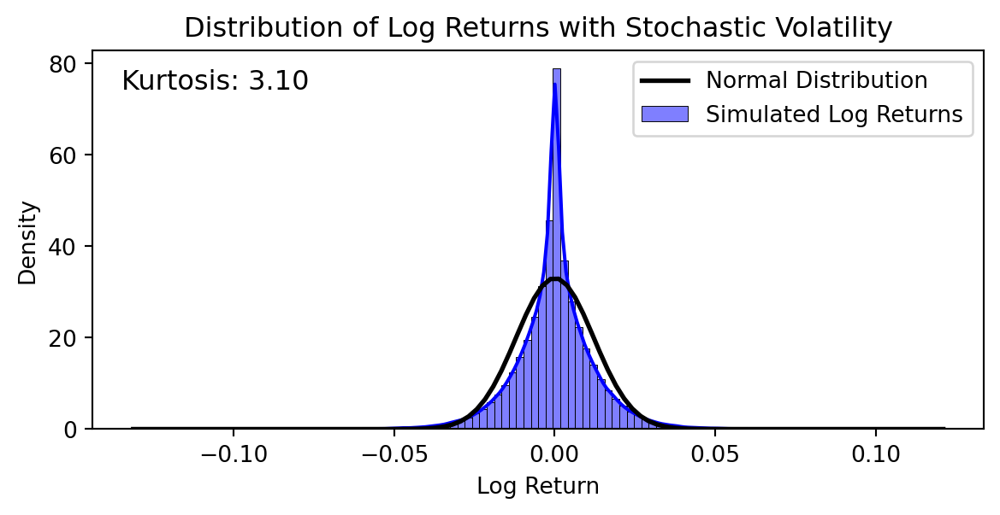

17 Stochastic Volatility
The volatility is stochastic (random) in a GARCH model, but it is determined by the changes in the stock price. In this section, in contrast, we will consider models in which the volatility depends on a second Brownian motion. The most popular model of this type is the model of Heston (Heston 1993). In this model, we have, as usual,
\[ \,\mathrm{d}\log S = \left(r-q-\frac{1}{2}\sigma^2\right)\,\mathrm{d}t + \sigma\,\mathrm{d}B_s\;, \qquad(17.1)\]
where \(B_s\) is a Brownian motion under the risk-neutral probability but now \(\sigma\) is not a constant but instead evolves as \(\sigma_t = \sqrt{v_t}\) where
\[ dv_t = \kappa \big[\theta-v_t\big]\,\mathrm{d}t + \gamma \sqrt{v_t}\,\mathrm{d}B_v\;, \qquad(17.2)\]
where \(B_v\) is a Brownian motion under the risk-neutral probability having a constant correlation \(\rho\) with the Brownian motion \(B_s\). In this equation, \(\kappa\), \(\theta\) and \(\gamma\) are positive constants. Given the empirical fact that negative return shocks have a bigger impact on future volatility than do positive shocks, one would expect the correlation \(\rho\) to be negative.
The term \(\kappa (\theta-v)\) will be positive when \(v<\theta\) and negative when \(v>\theta\) and hence \(\sigma^2=v\) will tend to drift towards \(\theta\), which, as in the GARCH model, is the long-run or unconditional mean of \(\sigma^2\). Thus, the volatility is said to mean revert. The rate at which it drifts towards \(\theta\) is obviously determined by the magnitude of \(\kappa\), also as in the GARCH model.
The specification Equation 17.2 implies that the volatility of \(v\) approaches zero whenever \(v\) approaches zero. In this circumstance, one might expect the drift towards \(\theta\) to dominate the volatility and keep \(v\) nonnegative, and this is indeed the case; thus, the definition \(\sigma_t = \sqrt{v_t}\) is possible. Moreover, the parameter \(\gamma\) plays a role here that is similar to the role of \(1-\lambda\) in the GARCH model—the variance of the variance in the GARCH model Equation 16.10 depends on the weight \(1-\lambda\) placed on the scaled return \(y_i\), just as the variance of the variance in the stochastic volatility model Equation 17.2 depends on the weight \(\gamma\) placed on \(\,\mathrm{d}B_v\).
We could discretize Equation 17.1 - Equation 17.2 as:
\[ \log S(t_{i+1}) = \log S_{t_i} + \left(r-q-\frac{1}{2}\sigma_{t_i}^2\right)\,\Delta t + \sqrt{v_{t_i}}\,\Delta B_s, \qquad(17.3)\]
\[ v(t_{i+1}) = v_{t_i} + \kappa \big[\theta-v_{t_i}\big]\,\Delta t + \gamma \sqrt{v_{t_i}}\,\Delta B_v\;. \qquad(17.4)\]
However, even though in the continuous-time model Equation 17.1 - Equation 17.2 we always have \(v_t \geq 0\) and hence can define \(\sigma_t=\sqrt{v_t}\), there is no guarantee that \(v(t_{i+1})\) defined by Equation 17.4 will be nonnegative. A simple remedy is to define \(v(t_{i+1})\) as the larger of zero and the right-hand side of Equation 17.4; thus, we will simulate the Heston model as Equation 17.3 and1 \[ v(t_{i+1}) = \max\left\{0,v_{t_i} + \kappa \big[\theta-v_{t_i}\big]\,\Delta t + \gamma \sqrt{v_{t_i}}\,\Delta B_v\right\}\;. \qquad(17.5)\]
A simple way to simulate the changes \(\Delta B_s\) and \(\Delta B_v\) in the two correlated Brownian motions is to generate two independent standard normals \(z_1\) and \(z_2\) and take \[\Delta B_s = \sqrt{\Delta t}\,z \qquad \text{and} \qquad \Delta B_v = \sqrt{\Delta t}\,z^*\; ,\] where we define \[z = z_1 \qquad \text{and} \qquad z^* = \rho z_1 + \sqrt{1-\rho^2}\,z_2\; .\] The random variable \(z^*\) is also a standard normal, and the correlation between \(z\) and \(z^*\) is \(\rho\).
As in the GARCH model, we can simulate a path of an asset price that follows a GARCH process and the path of its volatility as follows. The following python code produces three columns of data (with headings), the first column being time, the second the asset price, and the third the volatility in the Heston model.
Code
import numpy as np
import pandas as pd
def simulating_stochastic_volatility(S, V0, r, q, dt, N, theta, kappa, sigma, rho):
"""
Inputs:
S = initial stock price
V0 = initial variance
r = risk-free rate
q = dividend yield
dt = length of each time period (Delta t)
N = number of time periods
theta = long-term variance (mean of variance)
kappa = rate of mean reversion of variance
sigma = volatility of variance
rho = correlation between the two Wiener processes
"""
LogS = np.log(S)
Sqrdt = np.sqrt(dt)
time = np.zeros(N + 1)
stock_price = np.zeros(N + 1)
volatility = np.zeros(N + 1)
stock_price[0] = S
volatility[0] = V0
for i in range(1, N + 1):
time[i] = i * dt
Z1 = np.random.randn()
Z2 = np.random.randn()
W1 = Z1
W2 = rho * Z1 + np.sqrt(1 - rho**2) * Z2
LogS = LogS + (r - q - 0.5 * volatility[i-1]**2) * dt + np.sqrt(volatility[i-1]**2 * dt) * W1
S = np.exp(LogS)
stock_price[i] = S
volatility[i] = np.sqrt(np.maximum(volatility[i-1]**2 + kappa * (theta - volatility[i-1]**2) * dt + sigma * np.sqrt(volatility[i-1]**2 * dt) * W2, 0))
df_stochastic_vol = pd.DataFrame({'Time': time, 'Stock Price': stock_price, 'Volatility': volatility})
df_stochastic_vol.to_csv('stochastic_volatility_simulation.csv', index=False)
return df_stochastic_vol
# Example usage:
S = 100 # Initial stock price
V0 = 0.04 # Initial variance
r = 0.05 # Risk-free rate
q = 0.02 # Dividend yield
dt = 1/252 # Length of each time period (daily)
N = 252 # Number of time periods (one year)
theta = 0.04 # Long-term variance
kappa = 2.0 # Rate of mean reversion of variance
sigma = 0.3 # Volatility of variance
rho = -0.7 # Correlation between the two Wiener processes
df_stochastic_vol = simulating_stochastic_volatility(S, V0, r, q, dt, N, theta, kappa, sigma, rho)
print(df_stochastic_vol) Time Stock Price Volatility
0 0.000000 100.000000 0.040000
1 0.003968 99.726158 0.054538
2 0.007937 100.074946 0.048307
3 0.011905 99.945809 0.059813
4 0.015873 100.129575 0.054439
.. ... ... ...
248 0.984127 93.344123 0.171872
249 0.988095 94.087522 0.152977
250 0.992063 94.266084 0.149252
251 0.996032 93.395937 0.163006
252 1.000000 94.255783 0.140319
[253 rows x 3 columns]The following code plots the simulated stock price and the variance paths.
Code
import numpy as np
import matplotlib.pyplot as plt
# Heston model parameters
S0 = 100 # Initial stock price
V0 = 0.04 # Initial variance
rho = -0.7 # Correlation between the two Wiener processes
kappa = 2.0 # Rate of mean reversion of variance
theta = 0.04 # Long-term variance
sigma = 0.3 # Volatility of variance
r = 0.05 # Risk-free rate
T = 1.0 # Time to maturity
N = 252 # Number of time steps
dt = T / N # Time step size
n_simulations = 1000 # Number of simulations
# Preallocate arrays
S = np.zeros((N+1, n_simulations))
V = np.zeros((N+1, n_simulations))
S[0] = S0
V[0] = V0
# Simulate the paths
for t in range(1, N+1):
Z1 = np.random.normal(size=n_simulations)
Z2 = np.random.normal(size=n_simulations)
W1 = Z1
W2 = rho * Z1 + np.sqrt(1 - rho**2) * Z2
V[t] = np.maximum(V[t-1] + kappa * (theta - V[t-1]) * dt + sigma * np.sqrt(V[t-1] * dt) * W2, 0)
S[t] = S[t-1] * np.exp((r - 0.5 * V[t-1]) * dt + np.sqrt(V[t-1] * dt) * W1)
# Plot the results
plt.figure(figsize=(12, 6))
for i in range(n_simulations):
plt.plot(S[:, i], lw=0.5, alpha=0.3)
plt.title('Stock Price Paths with Stochastic Volatility (Heston Model)')
plt.xlabel('Time Steps')
plt.ylabel('Stock Price')
plt.grid(True)
plt.show()
# Plot the volatility paths
plt.figure(figsize=(12, 6))
for i in range(n_simulations):
plt.plot(V[:, i], lw=0.5, alpha=0.3)
plt.title('Variance Paths with Stochastic Volatility (Heston Model)')
plt.xlabel('Time Steps')
plt.ylabel('Variance')
plt.grid(True)
plt.show()

The following code shows that the stock returns under the stochastic volatility model display fat-tails with positive kurtosis.
Code
import numpy as np
import pandas as pd
import matplotlib.pyplot as plt
import seaborn as sns
from scipy.stats import norm, kurtosis
def simulating_stochastic_volatility(S, V0, r, q, dt, N, theta, kappa, sigma, rho, n_simulations):
"""
Inputs:
S = initial stock price
V0 = initial variance
r = risk-free rate
q = dividend yield
dt = length of each time period (Delta t)
N = number of time periods
theta = long-term variance (mean of variance)
kappa = rate of mean reversion of variance
sigma = volatility of variance
rho = correlation between the two Wiener processes
n_simulations = number of simulations
"""
LogS = np.log(S)
Sqrdt = np.sqrt(dt)
log_returns = []
for _ in range(n_simulations):
stock_price = S
variance = V0
for _ in range(N):
Z1 = np.random.randn()
Z2 = np.random.randn()
W1 = Z1
W2 = rho * Z1 + np.sqrt(1 - rho**2) * Z2
log_return = (r - q - 0.5 * variance) * dt + np.sqrt(variance * dt) * W1
LogS = np.log(stock_price) + log_return
stock_price = np.exp(LogS)
variance = np.maximum(variance + kappa * (theta - variance) * dt + sigma * np.sqrt(variance * dt) * W2, 0)
log_returns.append(log_return)
return log_returns
# Example usage:
S = 100 # Initial stock price
V0 = 0.04 # Initial variance
r = 0.05 # Risk-free rate
q = 0.02 # Dividend yield
dt = 1/252 # Length of each time period (daily)
N = 252 # Number of time periods (one year)
theta = 0.04 # Long-term variance
kappa = 0.2 # Rate of mean reversion of variance
sigma = 0.3 # Volatility of variance
rho = -0.7 # Correlation between the two Wiener processes
n_simulations = 1000 # Number of simulations
log_returns = simulating_stochastic_volatility(S, V0, r, q, dt, N, theta, kappa, sigma, rho, n_simulations)
# Plotting the distribution of log returns
sns.histplot(log_returns, bins=100, kde=True, stat="density", color="blue", label="Simulated Log Returns")
xmin, xmax = plt.xlim()
x = np.linspace(xmin, xmax, 100)
p = norm.pdf(x, np.mean(log_returns), np.std(log_returns))
plt.plot(x, p, 'k', linewidth=2, label="Normal Distribution")
plt.title('Distribution of Log Returns with Stochastic Volatility')
plt.xlabel('Log Return')
plt.ylabel('Density')
plt.legend()
# Display kurtosis
kurt = kurtosis(log_returns)
plt.figtext(0.15, 0.8, f'Kurtosis: {kurt:.2f}', fontsize=12)
plt.show()
To price European options, we again need to compute \[\text{prob}^S(S_T>K) \qquad \text{and} \qquad \text{prob}^R(S_T>K)\; .\] The virtue of modelling volatility as in Equation 17.2 is that these probabilities can be computed quite efficiently, as shown by Heston (Heston 1993).2 There are many other ways in which one could model volatility, but the computations may be more difficult. For example, one could replace Equation 17.2 by \[ \sigma_t = \mathrm{e}^{v_t} \quad \text{and} \quad dv_t = \kappa (\theta-v_t)\,\mathrm{d}t + \lambda \,\mathrm{d}B^*\;. \qquad(17.6)\]
This implies a lognormal volatility and is simpler to simulate than Equation 17.2—because \(\mathrm{e}^{v}\) is well defined even when \(v\) is negative—but it is easier to calculate the probabilities \(\text{prob}^S(S_T>K)\) and \(\text{prob}^R(S_T>K)\) if we assume Equation 17.2.
One way to implement the GARCH or stochastic volatility model is to imply both the initial volatility \(\sigma_0\) and the constants \(\kappa\), \(\theta\) and \(\lambda\) or \(\kappa\), \(\theta\), \(\gamma\) and \(\rho\) from observed option prices. These four (or five) constants can be computed by forcing the model prices of four (or five) options to equal the observed market prices. Or, a larger set of prices can be used and the constants can be chosen to minimize the average squared error or some other measure of goodness-of-fit between the model and market prices.
17.1 Hedging and Market Completeness
The GARCH model is inherently a discrete-time model. If returns have a GARCH structure at one frequency (e.g., monthly), they will not have a GARCH structure at a different frequency (e.g., weekly). Hence, the return period (monthly, weekly, ) is part of the specification of the model. One interpretation of the model is that the dates \(t_i\) at which the variance changes are the only dates at which investors can trade. Under this interpretation, it is impossible to perfectly hedge an option: the gross return \(S_{t_i}/S_{t_{i-1}}\) over the interval \((t_{i-1},t_i)\) is lognormally distributed, so no portfolio of the stock and riskless asset formed at \(t_{i-1}\) and held over the interval \((t_{i-1},t_i)\) can perfectly replicate the return of an option over the interval. As discussed in ?sec-s:incomplete, we call a market in which some derivatives cannot be perfectly hedged an incomplete market. Thus, the GARCH model is an example of an incomplete market, if investors can only trade at the frequency at which returns have a GARCH structure. However, it is unreasonable to assume that investors can only trade weekly or monthly or even daily.
Another interpretation of the GARCH model is that investors can trade continuously and the asset has a constant volatility within each period \((t_{i-1},t_i)\). Under this interpretation, the market is complete and options can be delta-hedged. The completeness is a result of the fact that the change \(\sigma_{i+1}-\sigma_i\) in the volatility at date \(t_i\) (recall that \(\sigma_i\) is the volatility over the period \((t_{i-1},t_i)\) and \(\sigma_{i+1}\) is the volatility over the period \((t_{i},t_{i+1})\)) depends only on \(\log S_{t_i}\). Thus, the only random factor in the model that needs to be hedged is, as usual, the underlying asset price. However, this interpretation of the model is also a bit strange. Suppose for example that monthly returns are assumed to have a GARCH structure. Then the model states that the volatility in February will be higher if there is an unusually large return (in absolute value) in January. Suppose there is an unusually large return in the first half of January. Then, intuitively, one would expect the change in the volatility to occur in the second half of January rather than being delayed until February. However, the model specifies that the volatility is constant during each month, hence constant during January in this example.
The stochastic volatility model is more straightforward. The market is definitely incomplete. The value of a call option at date \(t<T\), where \(T\) is the maturity of the option, will depend on the underlying asset price \(S_t\) and the volatility \(\sigma_t\). Denoting the value by \(C(t,S_t,\sigma_t)\), we have from Ito’s formula that \[
\,\mathrm{d}C_t = \text{something}\;\,\mathrm{d}t + \frac{\partial C}{\partial S}\,\mathrm{d}S_t + \frac{\partial C}{\partial \sigma}\,\mathrm{d}\sigma_t\; .\] A replicating portfolio must have the same dollar change at each date \(t\). If we hold \(\partial C/\partial S\) shares of the underlying asset, then the change in the value of the shares will be \((\partial C/\partial S)\,\mathrm{d}S\). However, there is no way to match the
\((\partial C/\partial \sigma)\,\mathrm{d}\sigma\) term using the underlying asset and the riskless asset.
The significance of the market being incomplete is that the value of a derivative asset that cannot be replicated using traded assets (e.g., the underlying and riskless assets) is not uniquely determined by arbitrage considerations. As discussed in ?sec-s:incomplete, one must use equilibrium pricing in this circumstance. That is what we have implicitly done in this chapter. By assuming particular dynamics for the volatility under the risk-neutral probability, we have implicitly selected a particular risk-neutral probability from the set of risk-neutral probabilitys that are consistent with the absence of arbitrage.
17.2 Variance Swaps
Variance swaps are a type of futures contracts that allows investors to trade future realized volatility against current option implied variance. Unlike traditional futures, which provide a payoff based on the difference between the underlying asset’s price and the futures price, variance swaps provide a payoff based on the difference between the realized variance of the underlying asset and the predetermined variance level (termed ``Strike’’ in practice), which is the futures price in variance unit.
Variance swaps have gained popularity due to their ability to provide pure exposure to the volatility of an underlying asset, independent of its price movements. Unlike traditional options, variance swaps allow investors to speculate on or hedge against changes in volatility without the need for constant delta hedging. This makes them an effective tool for managing volatility risk and for executing volatility arbitrage strategies, as they simplify the trading of variance and offer a more straightforward payoff structure based on realized versus implied volatility.
Payoff of a Variance Swap
A variance swap is a future contract on future realized variance. Its main components include:
- Notional Amount: Specifies the amount of money to be paid for each unit of variance difference.
- Strike: The predetermined level of variance agreed upon at the inception of the swap.
- Realized Variance: Calculated from the returns of the underlying asset over the life of the swap.
The payoff of a variance swap is given by:
\[ \text{Payoff} = \text{Notional} \times (\text{Realized Variance} - \text{Strike}) \]
Where:
- Realized Variance is typically calculated using the formula:
\[ \text{Realized Variance} = \frac{252}{N} \sum_{i=1}^{N} \left( \log\left(\frac{S_i}{S_{i-1}}\right) \right)^2 \]
Here, \(S_i\) represents the price of the underlying asset at time \(i\), and \(N\) is the number of trading days over the contract period.
Example: Suppose an investor enters into a variance swap with a notional amount of $100,000 and a strike of 0.04 (implying a volatility strike of 20%). If the realized variance over the swap’s life is 0.06 (implying a realized volatility of 24.5%), the payoff would be:
\[ \text{Payoff} = 100,000 \times (0.06 - 0.04) = 100,000 \times 0.02 = 2,000 \]
This means the investor would receive $2,000 at the end of the swap period.
As all futures constracts, variance swaps are marked to market on each trading day.
Variance swaps can be used to hedge against volatility risk. For example, a portfolio manager concerned about increasing market volatility can buy variance swaps to protect the portfolio’s value.
Traders can also use variance swaps to speculate or arbitrage on future volatility. For example, If a trader believes that future volatility will be higher than the current implied volatility, they can enter a variance swap to profit from this view.
Pricing of a Variance Swap for Stocks with Geometric Brownian Motion Prices
Similor the pricing of a futures, we need find the fair swap strike such that the initial value of the swap is zero. For simplicity, consider a stock whose price \(S_t\) follows a geometric Brownian motion process:
\[ \frac{dS_t}{S_t} = \mu \, dt + \sigma \, dZ_t \]
Applying Ito’s Lemma to \(\log(S_t)\):
\[ d(\log S_t) = \left( \mu - \frac{\sigma^2}{2} \right) \, dt + \sigma \, dZ_t \]
Rearranging terms, we get:
\[ \frac{dS_t}{S_t} - d(\log S_t) = \frac{\sigma^2}{2} \, dt \]
Integrating over the life of the swap ( [0, T] ):
\[ \text{Total Variance} = \frac{1}{T} \int_0^T \sigma^2 \, dt = \frac{2}{T} \left( \int_0^T \frac{dS_t}{S_t} - \log \left( \frac{S_T}{S_0} \right) \right), \] which implies that the total variance can be replicated by continuously rebalancing the stock position with weight \(1/S_t\) and shorting one unit of the security which pays the \(\log\) return of the stock. However, this \(\log\) return secutiry is not traded in the market. Fortunately, we can synthesize this security with a forward and options, because
\[ -ln (\frac{S_T}{S^*})=-\frac{S-S^*}{S^*}+\int_0^{S^*}\frac{(K-S)^+}{K^2}dK+\int_{S^*}^\infty\frac{(S-K)^+}{K^2}dK, \] where \(S^*\) is an arbitrary cut-off strike for calls and puts, the first term on the right hand side represents a short position in the forward contract on the stock, the second term represents a continuum of put options with strike prices from 0 to \(S^*\), and the third term represents a continuum of call options with strike prices above \(S^*\). Taking expectation under the risk-neutral probability, we have that the fair swap strike \(K_{\text{var}}\) is equal to:
\[ K_{\text{var}} = \frac{2}{T} \left( rT - \left( \frac{S_0}{S^*} e^{rT} - 1 \right) - \log \left( \frac{S^*}{S_0} \right) + e^{rT} \int_0^{S^*} \frac{1}{K^2} P(K) \, dK + e^{rT} \int_{S^*}^\infty \frac{1}{K^2} C(K) \, dK \right) \]
Choosing \(S^*\) to be the current forward price \(F_0=S_0 e^{rT}\):
\[ K_{\text{var}} = \frac{2 e^{rT}}{T} \left( \int_0^{F_0} \frac{P(K)}{K^2} \, dK + \int_{F_0}^\infty \frac{C(K)}{K^2} \, dK \right) \]
This formula allows us to compute the fair strike price of a variance swap using the prices of European call and put options. The following code provides an example of this computation using data from Yahoo finance for Apple.
Code
import numpy as np
import pandas as pd
from scipy.interpolate import interp1d
from scipy.stats import norm
import yfinance as yf
def indicator_function(condition):
return 1 if condition else 0
def calculate_variance_swap_strike(S, r, T, options_data):
# Extract call and put prices
call_data = options_data[options_data['Type'] == 'call'].copy()
put_data = options_data[options_data['Type'] == 'put'].copy()
# Interpolate call and put prices
strikes = np.unique(options_data['Strike'])
call_interp = interp1d(call_data['Strike'], call_data['Price'], fill_value="extrapolate")
put_interp = interp1d(put_data['Strike'], put_data['Price'], fill_value="extrapolate")
# Integrate using numerical methods (trapezoidal rule)
K_min, K_max = strikes.min(), strikes.max()
K = np.linspace(K_min, S*np.exp(r*T), 500)
integral1 = np.trapezoid(put_interp(K) / K**2, K)
K = np.linspace(S*np.exp(r*T),K_max, 500)
integral2 = np.trapezoid(call_interp(K) / K**2, K)
# Calculate the variance swap strike
variance_swap_strike = np.sqrt(2 * (integral1+integral2) / T)
return variance_swap_strike
# Example usage
ticker = "AAPL"
S = 150.0 # Current stock price
r = 0.01 # Risk-free rate
T = 0.5 # Time to maturity (6 months)
# Fetch options data from Yahoo Finance
stock = yf.Ticker(ticker)
expiry = stock.options[0]
opt_chain = stock.option_chain(expiry)
calls = opt_chain.calls[['strike', 'lastPrice']].copy()
puts = opt_chain.puts[['strike', 'lastPrice']].copy()
calls.columns = ['Strike', 'Price']
puts.columns = ['Strike', 'Price']
calls['Type'] = 'call'
puts['Type'] = 'put'
options_data = pd.concat([calls, puts])
# Calculate the variance swap strike
variance_swap_strike = calculate_variance_swap_strike(S, r, T, options_data)
print(f"Variance Swap Strike: {variance_swap_strike:.4f}")Variance Swap Strike: 0.6075Exercise 17.1 The purpose of this exercise is to generate a fat-tailed distribution from a model that is simpler than the GARCH and stochastic volatility models but has somewhat the same flavor. The distribution will be a mixture of normals. Create a python program in which the user can input \(S\), \(r\), \(q\), \(T\), \(\sigma_1\) and \(\sigma_2\). Use these inputs to produce a column of 500 simulated \(\log S_T\). In each simulation, define \(\log S_T\) as \[\log S_T = \log S_0 + \left(r-q-\frac{1}{2}\sigma^2\right)T + \sigma \sqrt{T}z\;,\] where \(z\) is a standard normal, \(\sigma = x\sigma_1 + (1-x)\sigma_2\), and \(x\) is a random variable that equals zero or one with equal probabilities.
Calculate the mean and standard deviation of the \(\log S_T\) and calculate the fraction that lie more than two standard deviations below the mean. If the \(\log S_T\) all came from a normal distribution with the same variance, then this fraction should equal \(\mathrm{N}(-2) =\) 2.275%. If the fraction is higher, then the distribution is fat tailed. (Of course, the actual fraction would differ from 2.275% in any particular case due to the randomness of the simulation, even if all of the \(\log S_T\) came from a normal distribution with the same variance).
Exercise 17.2 Create a python program prompting the user to input the same inputs as in the simulating_garch function except for the initial volatility and \(\theta\). Simulate 500 paths of a GARCH process and output \(\log S_T\) for each simulation (you don’t need to output the entire paths as in the simulating_garch function). Take the initial volatility to be 0.3 and \(\theta = 0.09\). Determine whether the distribution is fat-tailed by computing the fraction of the \(\log S_T\) that lie two or more standard deviations below the mean, as in the previous exercise. For what values of \(\kappa\) and \(\lambda\) does the distribution appear to be especially fat-tailed?
Broadie, M., and O. Kaya. 2006. “Exact Simulation of Stochastic Volatility and Other Affine Jump Diffusion Processes.” Operations Research 52: 217–31.
Epps, T. W. 2000. Pricing Derivative Securities. World Scientific Publishing, Singapore.
Glasserman, P. 2004. Monte Carlo Methods in Financial Engineering. Springer, New York Berlin Heidelberg.
Heston, S. 1993. “A Closed-Form Solution for Options with Stochastic Volatility with Applications to Bond and Currency Options.” Review of Financial Studies 6: 327–44.
There are better (but more complicated) ways to simulate the Heston model. An excellent discussion of ways to simulate the volatility process can be found in Glasserman (Glasserman 2004). Broadie and Kaya (Broadie and Kaya 2006) present a method for simulating from the exact distribution of the asset price in the Heston model and related models.↩︎